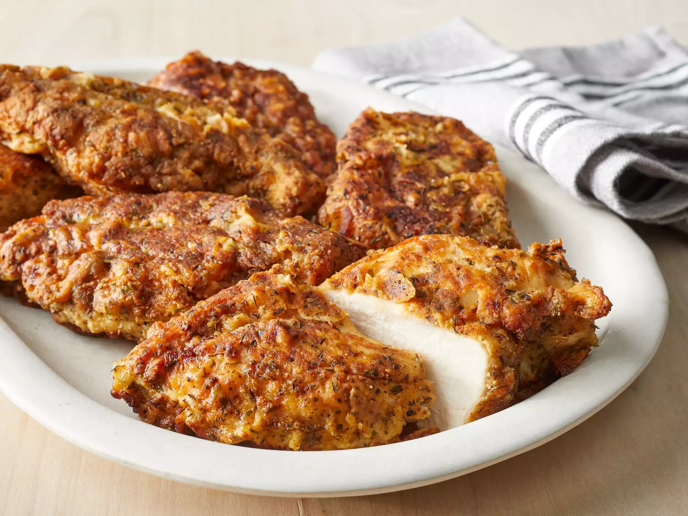

Tender Pan-Fried Chicken Breasts

Description
Fired Chicken made on top of the stove for the best result
Ingredients
- 2 cups flour
- 2 tablespoons salt
- 2 tablespoons ground black pepper
- 1 tablespoon dried tarragon
- 1 tablespoon ground ginger
- 1 tablespoon dry mustard powder
- 1 tablespoon dried thyme leaves
- 1 teaspoon garlic powder
- 1 teaspoon dried oregano
- 1 egg
- ¼ cup milk
- 8 (6 ounce) skinless, boneless chicken breast halves
- ½ cup vegetable oil
Steps
- Line 2 baking trays with aluminum foil; set aside.
- Stir together flour, salt, pepper, tarragon, ginger, mustard powder, thyme, garlic powder, and oregano in a shallow bowl until well-blended. Beat together egg and milk in a separate bowl until smooth.
- Dredge chicken breasts in flour mixture, shake off excess, then dip in egg, and again in flour. Place coated chicken breasts on one of the prepared baking trays; set aside to rest for 10 minutes.
- Preheat the oven to 350 degrees F (175 degrees C).
- Dredge chicken breasts in flour once more; shake off excess.
- Heat vegetable oil in a skillet over medium-high heat. Cook chicken breasts in hot oil until golden brown, 2 to 3 minutes per side. Place fried chicken breasts on the second prepared baking tray.
- Bake in the preheated oven until no longer pink in the center and the juices run clear, about 20 to 30 minutes. An instant-read thermometer inserted into the center should read at least 165 degrees F (74 degrees C).
- Serve hot and enjoy!